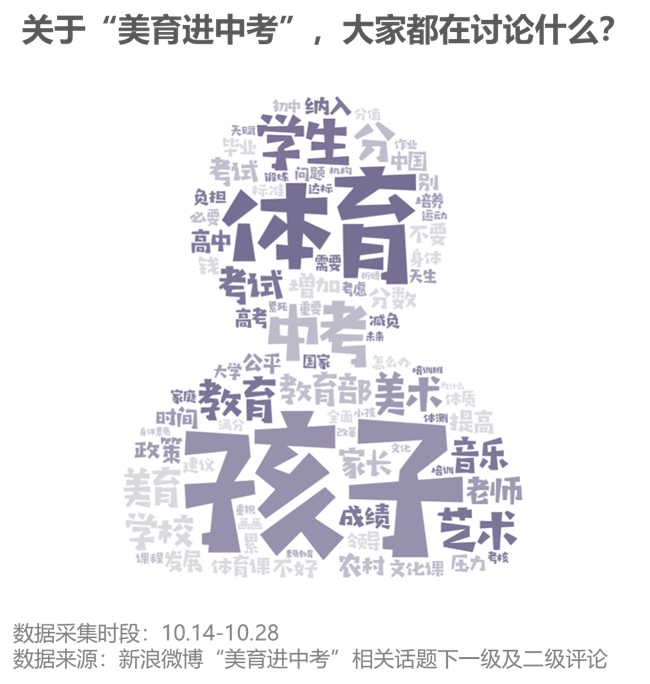
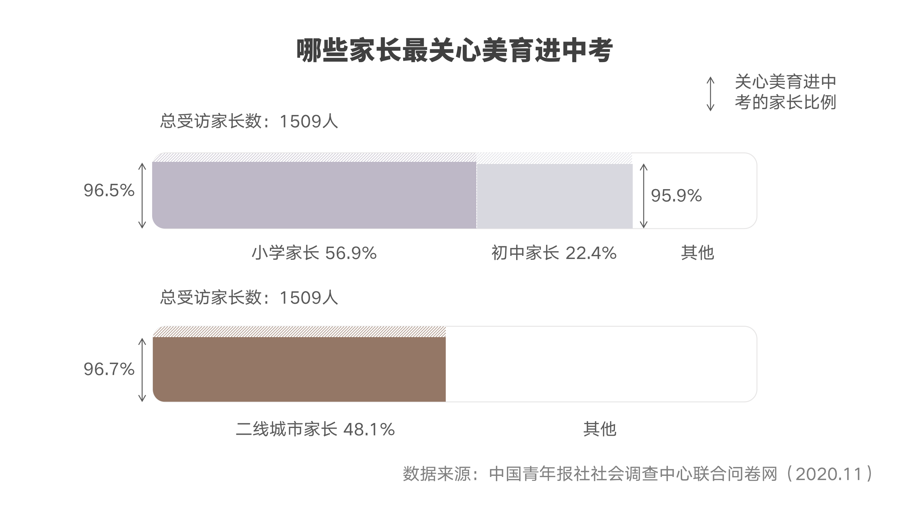
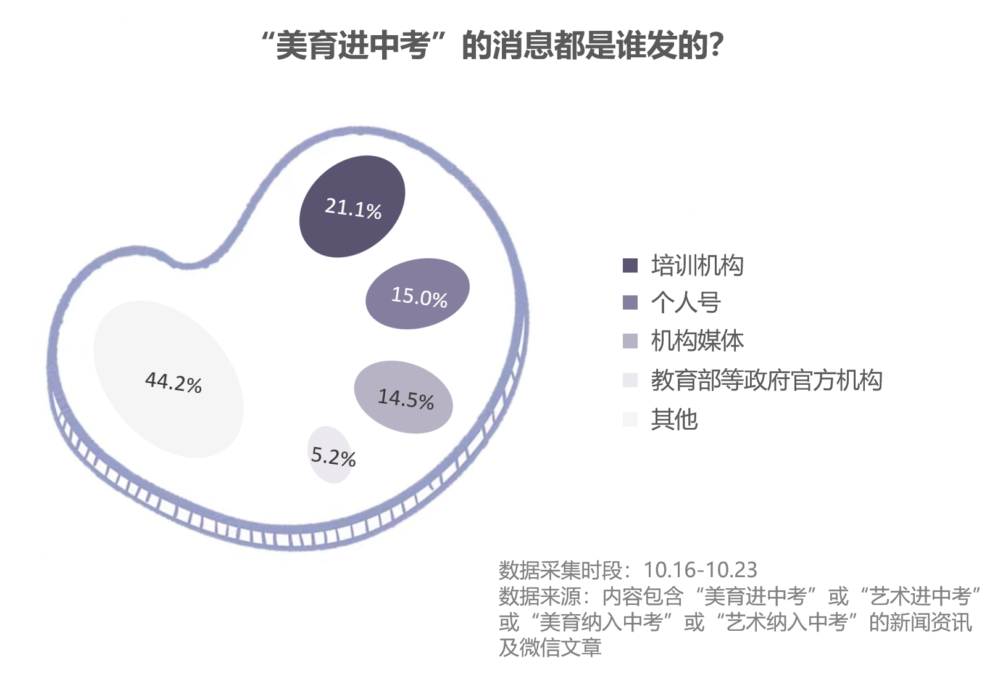
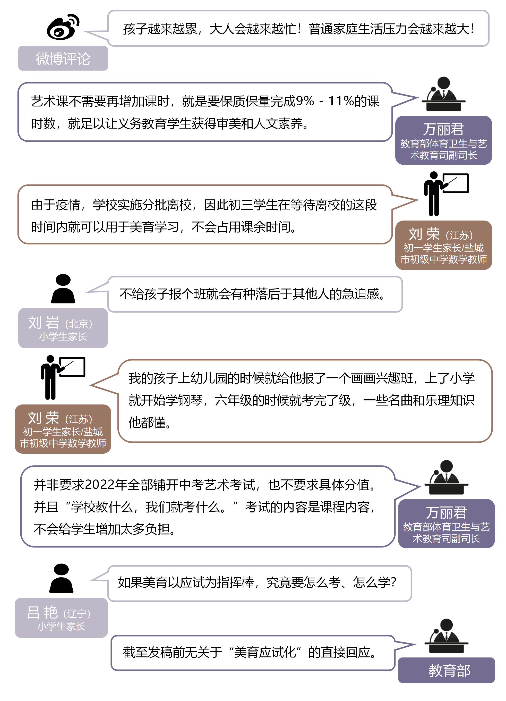
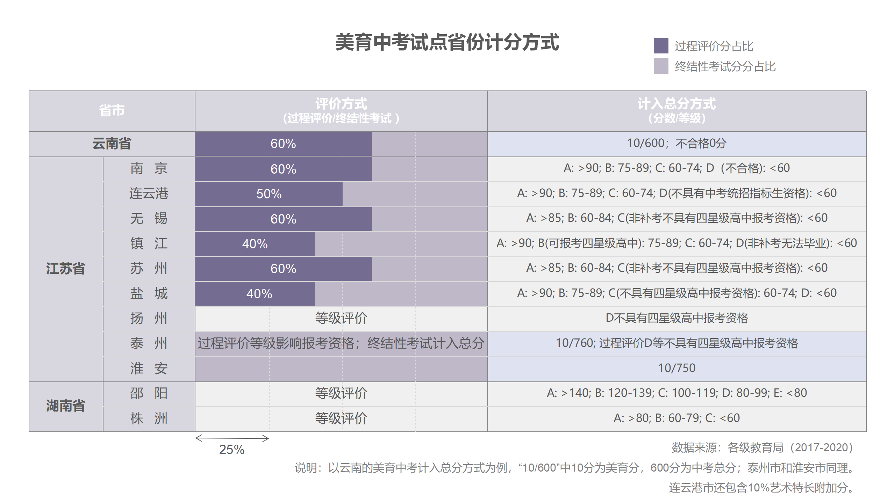
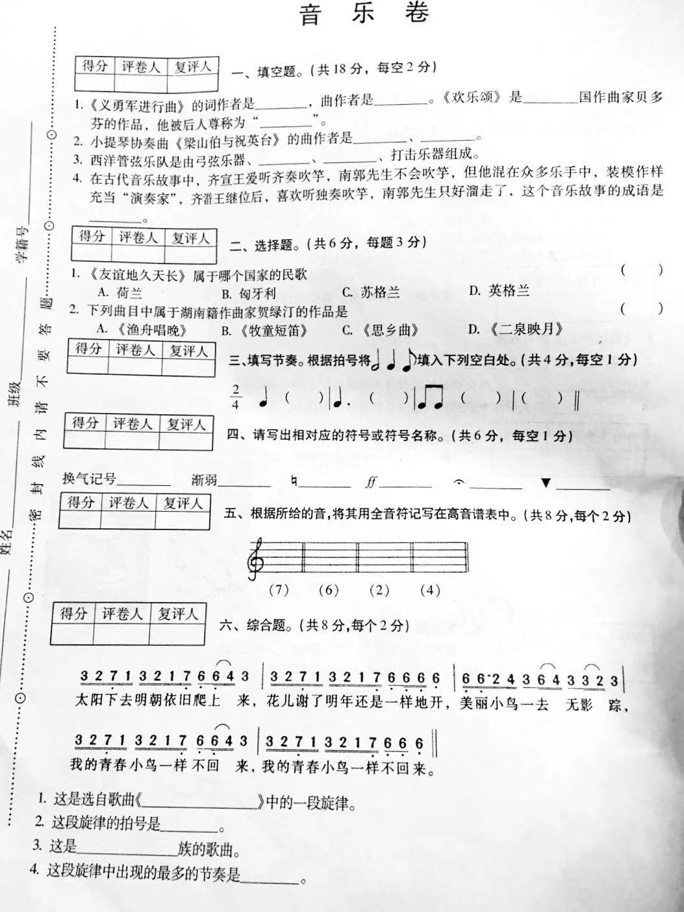
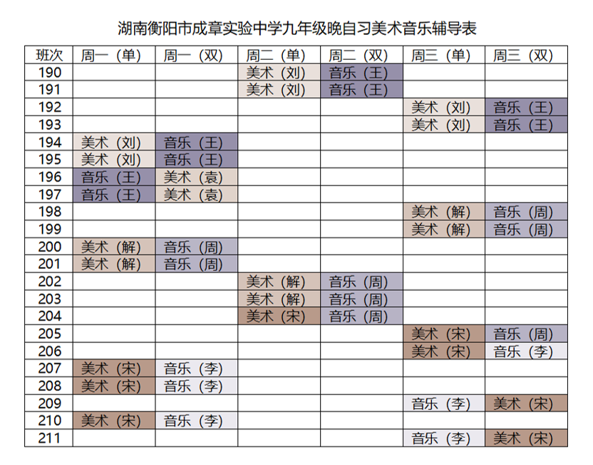
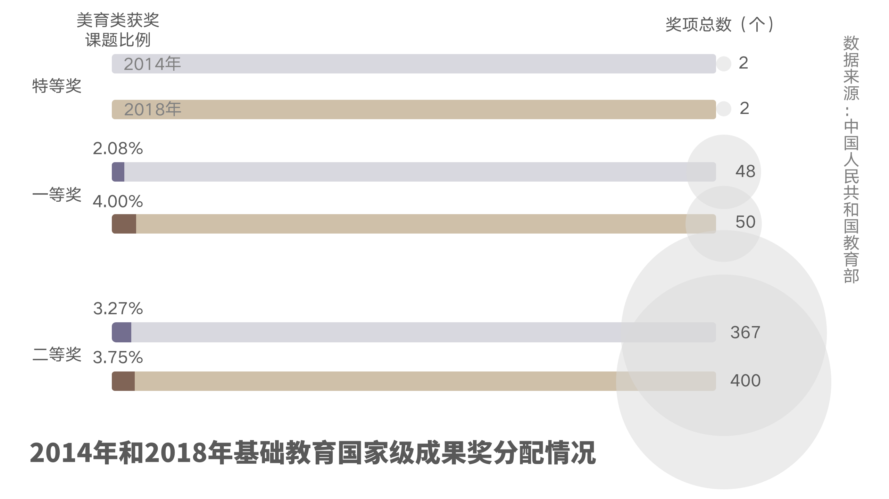

一张针对美育进中考的试卷
——数读五年美育成与败
(考试时间：2016 — 2020)
命题人：教育部 阅卷人：学生、教师、家长
考试说明:
这是一张针对五年来美育进中考实行成果的考卷。
2016年2月，为了从根本上改善艺术教育在学校中的薄弱状况，湖南省教育厅召开全省教育工作会议，在全省全面推行美育中考。教育部艺术与国防教育局相关负责人表示，是否成为试点取决于各省教育厅对自身教育发展水平的考量。2017年，云南、江苏紧随湖南其后，将美术和音乐列入中考科目。
今年10月14日，随着《关于全面加强和改进新时代学校美育工作的意见》（以下简称“《意见》”）的出台，全国各地实行美育中考成为大势所趋。体育卫生与艺术教育司司长王登峰介绍，目前全国已有9个省份开始试点美育中考。
但一石激起千层浪，中考新政的出台仍然引发大众对“学业增负”的讨论，激起的是家长对军备竞赛的焦虑、教师对评分机制的不满，还有培训机构的狂欢。
从《意见》来看，“进一步强化学校美育育人功能，构建德智体美劳全面培养的教育体系”是美育进中考的基本方针。本卷将以《意见》为评卷原则，以“是否增负”为打分标准，以家长、教师、专家、教育局为评卷人，用数据为五年来美育进中考成果进行打分。
一、谁的试场？为谁焦虑——一切为了孩子
10月14晚，来自教育部的新闻将“美育进中考”送上了热搜。
北京人刘岩所在的班级家长群当晚就“炸开了锅”。虽然孩子还在上小学，美育中考的消息一出，刘岩便感受到了报班、请家教的焦虑：“大家都很关心学校美育工作的进一步规划，也想着为孩子早做打算，不能落下。”


“美育进中考”的热搜成了家长倾诉焦虑的“树洞”。在10月14日到10月28日期间，“美育进中考”词条下互动量最高的10条微博的一级和二级评论显示，虽然关注点各有不同，但提及“孩子”的评论数量仍然最多——这表明，美育进中考引发了大量家长的关注,“负担”“压力”“金钱”“公平”是他/她们最为关切的话题。在央视新闻于10月24日发布的一条有关“教育部回应网传2022年艺术进中考”的微博下，一条内容为“培训班会越来越多，收费会越来越贵！孩子越来越累，大人会越来越忙！普通家庭生活压力会越来越大！”的评论以1363赞居于首位。
政策的未知性是引发焦虑的一大原因。近日，中国青年报社社会调查中心针对不同地区的1506名学生家长的一项调查显示，对美育中考政策最为关注的家长集中在二线城市，关注政策的家长群体中，超过半数都是小学生家长。虽然上六年级的孩子已经学习绘画7年，辽宁的家长陈艳依然感到焦虑：“非常认可加强孩子的审美教育和艺术素养，但如果以应试为指挥棒，究竟要怎么考、怎么学？”

“报班要趁早”是许多小学生家长的心态。刘岩认为这种焦虑来源于“孩子起跑线的攀比”。她发现，自己搜索“美育进中考”后，占据热门的都是培训机构的广告，这让她“没法不焦虑。”
但并非所有家长都对美育中考感到焦虑，来自一些美育进中考试点省份的家长则淡定了许多。而教育部针对部分家长的压力也做出了回应。

像上图中刘荣这样的家长在盐城并不少见。政策发布后，作为班主任的刘荣没有收到来自家长的任何抱怨：“现在城里的绝大多数家长对孩子教育这一块都比较重视，另外也重视孩子们的全方面发展。”
但在另一些试点地区，教师代替孩子的家长，成了最焦虑的人。
吉卫县隶属湘西苗族自治州的贫困县花垣，留守儿童与空巢老人是其最显著特征。年逾不惑的麻卫国在吉卫镇民族中学担任美术教师已18年。2016年湖南在全省全面推行美育中考。麻国志对这一变化很担心：“这里大多都是留守儿童，家长没法管学习。光靠教师是没法让学生重视美术的。”
本着提高乡村孩子审美水平的目的，麻国志安排了大量时间训练学生的绘画能力。然而中考前一个月考纲发布时，麻国志傻眼了：“全是理论题！”他连夜为学生整理考纲上的知识点，有“整整五张8开纸”。考试前一天，麻国志走进教室，为每个学生系上了代表好运的红绳。多年过去，他对美育中考的第一届学生依然愧疚。
无论美育是否进中考，语数外上的“好生”依然是所有科目老师眼中的“宠儿”。湖南衡阳市成章实验中学音乐教师、综合组组长王桦班上不乏有主科成绩优异但在音乐上基础薄弱的学生，“本能地不想音乐拖他们成绩的后腿”。王桦特意抽时间给这些学生“开小灶”，但她发现，“好生”几乎所有的课间都让渡给了主科老师的补习。
二、美育都在考什么？——客观题是主要题型
湖南、江苏和云南是最早拉开美育进中考序幕的三个试点省份。

目前，美育中考的评价机制在试点省份存在着较大差异，各省教育厅都给予下属市教育局制定评价体系的自主权。就分值而言，艺术分一般在中考中占到10-30分，大致相当于体育中考分值的1/3。等级制和计分制是目前美育中考最主要的两种评价机制。除去江苏淮安、泰州，以及云南所有城市，其余试点都采取了等级评价。
而家长更为关心的是分数的组成。在大部分试点，美育中考的最终成绩都涵盖了俗称为“日常表现分”的过程评价和安排在初三的终结性考试。但在艺术特长加分上，不同的试点产生了较大的差异。江苏基本实现了艺术特长加分的全覆盖，而湖南和云南则并未采取这一加分形式。
《意见》指出，推进评价改革是美育进中考全面深化教育改革的举措之一，需“依据课程标准确定考试内容，利用现代技术手段促进客观公正评价。”但目前的美育中考形式依然引起了教师的不满。网上公开发布的美育中考试卷显示，大部分地区都采取了选择、填空、判断、简答等客观题，艺术实操并未纳入评价体系。

(滑动查看完整试卷) 图源：王桦
“为了公平就只能闭卷笔试，可音乐美术怎么能以一纸试卷来评判能力呢？”这是王桦在内的一众音乐美术老师的烦恼。学生能力无法被评判，而教师的专业能力也无处施展。王桦和其他老师常常开玩笑：“我们其实只要花半天时间把每个班的班主任教会，考试分数肯定比我们进课堂要更高。”
据王桦观察统计，“一流学校”学生在满分为30分的音乐考试中可以拿到25分以上的平均分，而其余学校均分往往在20分以下，“好的学校愈好，差的学校愈差”。麻国志则已看淡了不同学校之间的分差——不管自己如何警醒，学生“音美不如语数”的思想仍然没有改变。
学校成绩的“马太效应”也存在于学生中。五年来，王桦发现一个残酷的事实，在语数英等主科上成绩优异的学生往往也能在音乐和美术考试上表现出色，但差生则相反——“理论题考的是应试技巧，素质教育依然在增加‘好生’和‘差生’之间的成绩鸿沟。”
但华东师范大学体育与健康学院专家团队并不认可由于会造成不公平而取消美育中考的意见。这支曾参与体育中考提分政策制定的团队认为：“在语数英上每个孩子天赋智力也有差异，而且也存在家长之间的军备竞赛。因此用天赋和家庭资本差异来否定美育中考是立不住脚的。”
中国人民大学艺术学院党总支书记、教授张淳认为目前美育中考方案需要“注重个体差异，将考核内容的选择权交给学生”，因此应给予“过程评价分”更高的占比，艺术特长和竞赛获奖仅作为附加分设置，以此鼓励学生参与更多样的艺术活动，在广泛尝试的基础上寻找到自己的兴趣点，再进行深入的学习提高。
关于美育中考形式的探索仍在进行，一些美育中考政策面临大浪淘沙。在家长的反对声中，2018年，美育中考计分制在衡阳半路折戟，由闭卷改为开卷考试，成绩按照等级计入学生综合素质评价。
三、人才能否配备齐全？——“教师不该有‘十八般武艺’”
“改善场地器材建设配备”是美育进中考的重要举措。麻国志记得，2016年实施美育进中考后，学校拥有了独立的绘画教室。
教育部数据显示，全国初中音美器材配备达标学校比例不断上升，截至2019年，达标率已超过95%。但从图中可以看出，虽然中小学艺术教育资源配备逐渐齐全，小学音美器配备达标学校比例依然低于初中。部分小学依然存在较大的人才缺口，主课教师被迫代课，练就“十八般武艺”。
点击箭头查看下一页
“配齐配好美育教师”又是美育进中考的另一目标。早在美育进中考政策实施初期，作为试点的江苏、湖南和云南已相继出台按计划招聘美育教师的文件，三个省份的美术、音乐教师招聘比例在2017年后都有显著提升。
今年毕业于师范音乐教育专业的闫妙可目前正从事电台节目策划。在一项关于艺术教育的话题征集中，她收到了在江苏农村小学任教的大学同学的抱怨：“小学的艺术教师都没有配备齐全，音乐美术都由语文数学老师来上——好比‘我的体育是数学老师教的’真的存在。”
给亲戚家上初中的孩子上钢琴课期间，闫妙可受到了更为强烈的冲击：“他连五线谱都不会认，这不是小学就应该教的吗？”在她看来，美育教育要正常实施不能光靠初中发力，不弥补中小学之间素质教育的“鸿沟”将会成为美育进中考的障碍。
王桦也感受到了闫妙可口中的这种“鸿沟”。她发现，不少孩子对音乐感兴趣，但是基础着实薄弱，“不会识谱的太多了”。但认识五线谱早已成为大部分省市小学阶段音乐教学目标之一，被编写入人教版教材之中。“我更支持美育在小学阶段大力发展。这是需要长期培养和熏陶的”，否则“初中三年内重新捡起音乐知识很容易变成死记硬背。”
点击年份按钮查看下一页
为解决农村艺术教师不足的问题，各试点自2017年起提高了特岗（注：农村义务教育阶段学校教师特设岗位计划”简称“特岗计划”）招聘岗位中艺术教师的比例。同时，美育体育浸润计划的开展有效匹配高校艺术人才和农村中小学，人才资源配备工作的确得到了改善。在衡阳，原来已改行任教其它学科的艺术专业教师因教育局要求归位，并且艺术教师的招聘计划逐年增加。2015年，全市新进艺术教师150人，补充艺术教研人员6人。

图源：王桦
但在艺术类教师招聘比例上升的背后，是音美教师面对负责科目骤然加入中考行列的无所适从。2015年以来，王桦带了三届中考生。虽然音乐进中考后，初三每周一节的音乐课课时得到了保证，但一旦节假日和月考“撞上了”原本的课时，学生们往往面临一个月只上一两节课就进考场的情况。王桦尽力做好了万全之策，“每周出理论考点复习题和资料，让学生保持做题的‘手感’”，但“拼尽全力也提不高学生的平均分。”
音乐和美术在衡阳计分的这三年，王桦感到前所未有的压力。她甚至累到出现了斑秃，“头发一块一块地脱”。
四、主课还是副课？——人才备齐后，社会偏见还需改
提高艺术课程的地位是多数省市设立试点的目的。早在2012年，美育中考在湖南益阳短暂推行。2015年，出于改善农村艺术教育资源配备的目的，湖南省衡阳市便吃下了美育中考这只“螃蟹”，率先成为全省推行前的试点城市。衡阳市教育局局长、党委书记周法清认为，“从实践效果来看，艺术教育依然是学校教育中的薄弱环节，存在很多困难。这其中最根本的原因是顶层设计乏力，没有有效的艺术教育考核和测评机制，从而导致艺术教育在文化课程教育的挤压下，日趋边缘化。”
副课的这种“边缘化”，麻国志时常能感受到。临近期中期末，常常有语数老师找他借课。但《意见》指出，加强和改进新时代学校美育工作需要“优化美育教师岗位结构，畅通美育教师职业发展通道”，并“在教学成果奖等评选表彰中，保证美育教师占有一定比例。”

国家级教学成果奖是国务院确定的教育教学领域最高级别的奖项，与国家自然科学奖、国家科技进步奖、国家技术发明奖并列，自2014年起每4年评审一次。可以看出，在获得基础教育国家级教学成果奖的课题中，美育相关课题所占比例不足5%，在特等奖甚至颗粒无收。2018年的评审结果与2014年相比，美育课题获奖比例略有提高。《义务教育课程设置实验方案》（教基〔2001〕28号）规定，艺术类课程占九年总课时的比例是9％-11％，但美育类课题获奖比例依然远低于艺术课时比例。
2020年10月，青岛一所学校的体育老师担任班主任却遭到家长反对。无独有偶，上海市优秀班主任、浦江一中美术教师洪耀伟曾在入学家长会上被公开质疑：“美术老师怎么能当班主任？我的孩子要换班！”
目前，语数英等社会俗称的“主课”仍然比音美这些“副课”更掌握官方评价和民间评价体系的话语权。2020年9月，教育部发布《关于进一步激发中小学办学活力的若干意见》，提出“向教育教学实绩突出的一线教师和班主任倾斜”。这意味着，师资配备本就不占优势的音美老师在评价体系中天然存在弱势。在王登峰看来：“这些问题的出现，其实还是社会思想观念和现行的师资教师评价乃至学生评价体系所带来的一个问题。”
对此，王登峰表示：“从教育部的角度来说，体育教师、音乐老师、美术老师、科技老师都可以做班主任。因为每一名教师都是要有教师资格证的，都是符合教师要求的。”
五、美育还是增负？——“一切还是为了孩子。”
原南京艺术学院党委书记、南京大学教育学院兼职导师管向群总结了我国目前美育教育的“症结”：审美意识更多的停留在工具层面而不是价值层面；在学校教育中，存在着用智育挤压或者替代美育的现象；从公共教育资源的角度来看，目前的公共资源还不能满足庞大的审美受众的需求；从社会心态来看，社会缺少一定的审美情怀和审美关切，公民则缺乏艺术和审美修养。
“时代愈来愈便捷，我们的知识点越来越多，但学生的时间是有限的。”学生课业负担加重，但创新性人才的培养并未取得突破性的进展，这一现象让体育与健康学院专家团队开始反思目前的考试制度，“现有的考试导向是与我国德智体美劳的培养体系偏离的，对‘智’的过分强调让大众天然不重视美育。”江苏省淮安市体卫艺处处长安慧娟也表示，“艺术素养不能以简单的笔试进行考核，我们希望更多的专家来研究，怎样来优化考试的方式方法、内容和手段。”
目前，学科整合成为西方教育发展改革的趋势，而体育与健康学院专家团队也将目光放置在了这块“他山之玉”上。以瑞典为例，高中课程的设置打破了文理的界限，而以项目（programme）为单位，设立多个研究方向供学生选择。“将文理科目根据‘德智体美劳’的培养目标整合成五个板块，中考就考这五门，孩子的压力自然减少。”专家们解释，“这是培养学生全面发展和减少课业压力的根本出路。”
但专家们也强调，美育本身并不会增加教育不公平：“现阶段的不公平代表我们还没找到最佳的制度，但提高美育的地位会是大势所趋。”张淳希望，未来的美育培养“不能仅仅依靠学校的课堂学习，家庭、学校、社会要合力打造美育教育完整生态。”
（应受访者要求，文中刘岩、陈艳均为化名）
关于“美育进中考”，大家都在讨论什么？：该图的数据来源为新浪微博，运用数说聚合平台，以“美育进中考”、“艺术进中考”、“美育纳入中考”、“艺术纳入中考”为关键词，抓取了10月14日至10月28日期间的微博发帖，共2296条数据。从中选择了互动量（为转发量、评论量、点赞量之和）最高的10条发帖，运用八爪鱼平台抓取一级及二级评论，进行内容切词后制成词云。
“美育进中考”的消息都是谁发的？：该图的数据来源为新闻资讯及微信公众号文章，运用数说聚合平台，以“美育进中考”、“艺术进中考”、“美誉纳入中考”、“艺术纳入中考”为关键词，选定时间范围为10月16日至10月23日，选定数据来源为新闻及微信，共抓取数据4877条，而后人工对作者进行分类。
制作者（姓名首字母排列）：
高思逸、王诺、王咏荷、王子安、周鑫雨